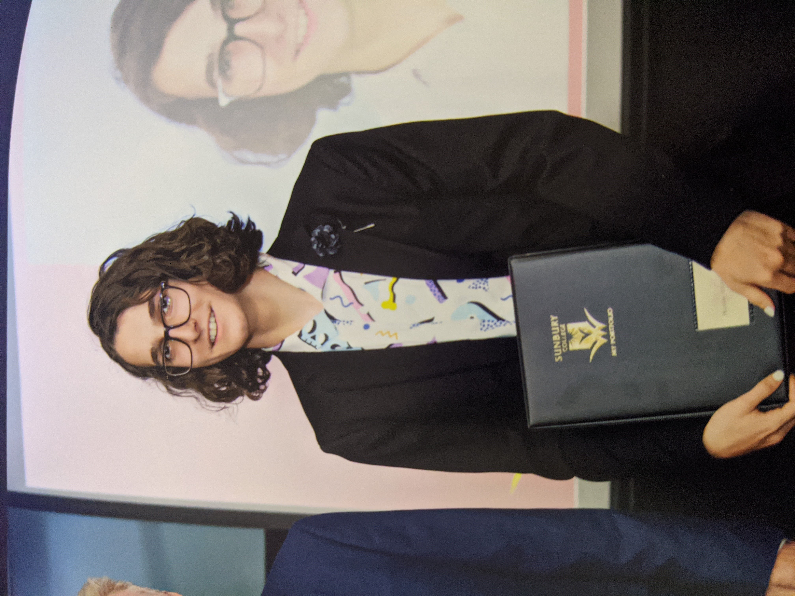

My Profile
Personal Information
Name: Huxton Chalmers
School Email: s3900426@student.rmit.edu.au
Student Number: s3900426
Education Level: Year 12 VCE Completed
Other Information:
I was born in Australia, I enjoy watching movies with friends and skateboarding even though I haven't in almost 6 months because I have gotten lazy and tend to stay indoors a lot more.
Interesting Facts: I have never broken a bone, I never looked at my ATAR.
Picture of Me:

My Interests in IT
Primary Interests
My main interests in IT are predominantly in cyber security, cloud computing and artificial intelligence as I believe those fields will have a very large presence in the coming future, also they are very expansive and can be used in so many applications.
Background
This interest grew in primary school when I had a class where I took apart computers and leant about all the parts. Then in later years of primary school I learnt how to make small games on scratch leading me to wanting to learn proper coding languages which I did through IT and VCE Software Dev throughout high school. Wherein I did quite well and enjoyed these classes, so I decided to pursue a career in it.
Why RMIT and The Future
I had heard that RMIT was a great school especially for everything IT related courses, on top of that I think it has a very nice campus and facilities also its location being in the city with plenty of services around makes it a great space.In my studies I hope to learn about multiple fields in IT and really get to know which one I will pursue in either a career or further studies as I delve into each of the main fields offered and classes I take.